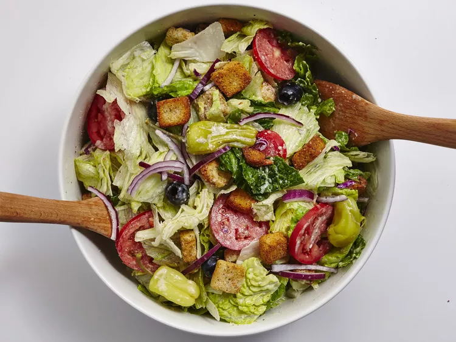

Home
Garden Salad

Description
A fresh garden salad. Perfect for accompanying any meal or on its own.
Ingredients
Salad
- 200g croutons
- 1 head romaine lettuce
- 1 cucumber
- 200g baby tomatoes
- 250g feta cheese
- 250g olives
- 0.5 red onion
Vinaigrette
- 0.5 cup olive oil
- 0.25 balsamic vinegar
- black pepper to taste
- salt to taste
- 1 tablespoon lemon juice
Steps
- Wash all the vegetables.
- Roughly chop the lettuce.
- Cut the cucumber in half lengthwise and cut it into half circles.
- Cut the tomatoes in half.
- Thinly slice the red onion.
- Add all the vegetables to a salad bowl along with the olives.
- In a seperate bowl, mix the olive oil, balsamic, salt, pepper, and lemon juice to make a vinaigrette.
- pour the Vinaigrette over the salad and toss the salad.
- Crumble the feta over the salad and add the croutons.